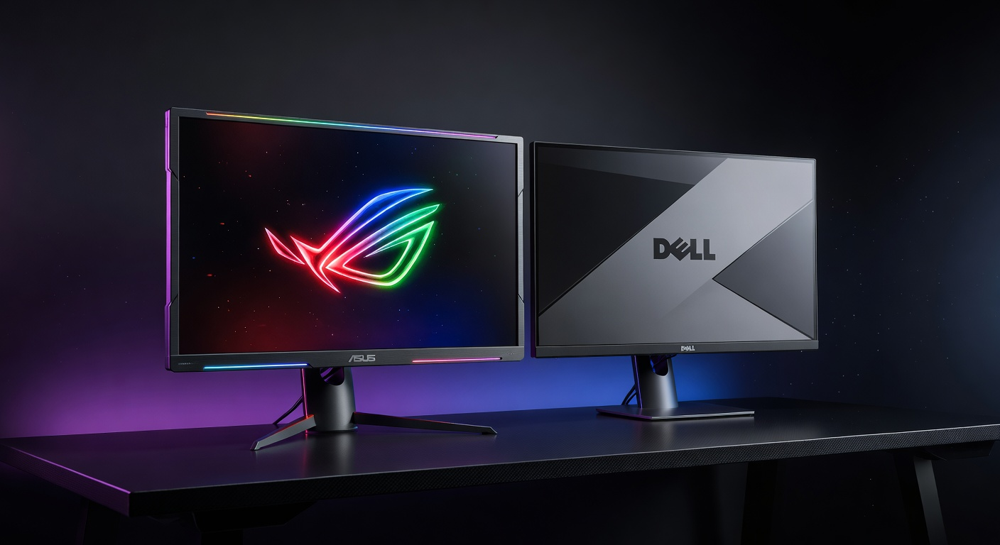

As an Amazon Associate I earn from qualifying purchases. Links below may earn us a commission at no extra cost to you.
ASUS ROG Swift PG279QM vs Dell S2722DGM: Premium 240Hz IPS vs Budget 165Hz VA at 1440p
Both are 27" QHD 1440p monitors. Both support FreeSync Premium. Both will look sharp playing your favorite games. That's where the similarities end. The ASUS ROG Swift PG279QM is a premium competitive monitor — 240Hz Fast IPS, G-Sync Compatible, HDR10, and overclockable to 280Hz for esports players who demand the absolute highest refresh rate at 1440p. The Dell S2722DGM is the value play — 165Hz VA with a 1500R curve, 3000:1 contrast ratio for deep blacks, and a price tag that's roughly half of the ASUS. This comparison will tell you exactly which one is worth buying for your setup.

ASUS ROG Swift PG279QM
~$700
240Hz Fast IPS · 1440p · HDR400
VS
Dell S2722DGM
~$300
165Hz VA Curved · 1440p · 3000:1
Quick Verdict
ROG Swift PG279QM for competitive FPS; Dell S2722DGM for budget 1440p and immersive gaming
The ASUS ROG Swift PG279QM is one of the best 1440p competitive monitors available — 240Hz Fast IPS with exceptional response times and full G-Sync compatibility. At ~$700 it's a serious investment, justified only if you run a high-end GPU and play games where you can sustain 200+ FPS at 1440p. The Dell S2722DGM costs half as much and delivers a genuinely strong 1440p experience: 165Hz is plenty fast for all but the most hardcore esports players, and the VA panel's 3000:1 contrast ratio makes dark scenes look dramatically better than any IPS monitor. For most gamers, the Dell wins on value. For serious competitive players already spending big on a GPU, the ASUS is worth it.
Head-to-Head: Category by Category
Refresh Rate & Competitive Performance
ASUS ROG Swift PG279QM (240Hz)
The PG279QM's 240Hz (overclockable to 280Hz) is a significant advantage for competitive esports gaming — CS2, Valorant, Apex Legends, and Overwatch 2 all benefit from every extra frame you can push. The gap between 165Hz and 240Hz is smaller than the jump from 60Hz to 165Hz, but it's real and measurable in fast-paced tracking scenarios. However, reaching 200+ FPS consistently at 1440p requires serious GPU power — think RTX 4080 or better. If your GPU is a 4070 or below, you'll spend more time at 165Hz territory regardless of which monitor you own, making the Dell's 165Hz ceiling more than sufficient.
Contrast & Dark Scene Quality
Dell S2722DGM (3000:1 VA)
This is the Dell's biggest advantage. VA panels inherently achieve far deeper blacks than IPS — the S2722DGM's 3000:1 contrast ratio versus the ASUS's 1000:1 is a 3x difference you'll actually see. In dark game environments, horror titles, sci-fi games, or any scene with shadow detail, the Dell makes IPS monitors look washed out by comparison. Blacks are genuinely dark, not dark gray. If you play games with moody lighting (Dark Souls, Resident Evil, cyberpunk aesthetics, space sims), the VA contrast advantage is one of the most impactful visual improvements available without paying OLED prices.
Response Time & Motion Clarity
ASUS ROG Swift PG279QM (Fast IPS)
Fast IPS panels are designed specifically to close the response time gap with TN panels while keeping IPS color quality. The PG279QM delivers 1ms GtG — one of the best IPS response times available. The Dell's VA panel has a GtG spec of 2ms, but VA panels are known for slower response times on dark-to-dark transitions, which can produce smearing or trailing in fast motion. The ASUS's Fast IPS technology virtually eliminates this problem. For competitive shooters where ghosting ruins aim tracking, the ASUS's motion clarity is a tangible advantage. The Dell is fine for most games but may show slight smearing in very fast, dark scenes.
Color Quality & Accuracy
ASUS ROG Swift PG279QM (Fast IPS)
IPS panels have a well-earned reputation for better color accuracy and wider viewing angles than VA. The PG279QM covers 100% sRGB with good DCI-P3 coverage and consistent color across the screen. The Dell's VA panel has good color but can shift slightly when viewed off-axis — a non-issue if you're seated directly in front. Both look excellent for gaming, but the ASUS has an edge for content creation, streaming, or anyone working with colors. The ASUS also supports HDR10 with DisplayHDR 400 certification; the Dell has no HDR certification, so bright HDR highlights will be far more impactful on the ASUS.
Immersion & Form Factor
Dell S2722DGM (1500R Curved)
The Dell's 1500R curve wraps the screen gently toward you — a subtle but pleasant addition for immersive single-player gaming, open-world exploration, and RPGs. Racing games, flight sims, and story-driven games feel more cinematic on a curved panel. The ASUS is flat, which some competitive players actually prefer for consistent geometry at the screen edges. Flat is standard for esports; curved is an aesthetic and comfort choice. If immersion matters to your gaming style, the Dell's curve is a bonus you get at no extra cost over its flat-screen competitors.
Value for Money
Dell S2722DGM (~$300)
The Dell S2722DGM is one of the best-value 1440p monitors on the market at ~$300. You get 165Hz (fast enough for virtually all gaming), 1440p sharpness, a 3000:1 contrast ratio that beats any IPS at this price, FreeSync Premium, and a curved form factor. The ASUS PG279QM at ~$700 is roughly 2.3x the price for an upgrade that matters primarily to competitive esports players who can actually utilize 240Hz at 1440p with a high-end GPU. For the vast majority of gamers, the Dell delivers 85–90% of the experience at under half the cost. The ASUS is a premium tool for a specific use case — excellent at what it does, but not broadly better for all gamers at twice the price.
Spec Comparison
| Spec | ASUS ROG Swift PG279QM | Dell S2722DGM |
|---|---|---|
| Price | ~$700 | ~$300 |
| Panel | Fast IPS (Flat) | VA (1500R Curved) |
| Size | 27" | 27" |
| Resolution | 2560×1440 (QHD) | 2560×1440 (QHD) |
| Refresh Rate | 240Hz (OC: 280Hz) | 165Hz |
| Response Time | 1ms GtG | 2ms GtG / 1ms MPRT |
| Contrast Ratio | 1000:1 | 3000:1 |
| HDR | HDR10, DisplayHDR 400 | None |
| Color Coverage | 100% sRGB, DCI-P3 | 99% sRGB |
| Brightness | 400 cd/m² | 350 cd/m² |
| Adaptive Sync | G-Sync Compatible + FreeSync Premium | G-Sync Compatible + FreeSync Premium |
| Ports | HDMI 2.0, DP 1.4, USB hub | HDMI 2.0 ×2, DP 1.4 |
4 Key Differences
1
Refresh Rate: 240Hz vs 165Hz
The PG279QM's 240Hz (OC: 280Hz) is meaningfully faster than the Dell's 165Hz for competitive esports play — but only if your GPU can sustain those frame rates at 1440p. An RTX 4080 or above can push 200+ FPS in esports titles at 1440p. For mid-range GPUs (RTX 4070 or below), both monitors will feel similarly fast in most games.
2
Panel Type: Fast IPS vs VA
Fast IPS (ASUS) wins on response time, color accuracy, and viewing angles. VA (Dell) wins on contrast ratio — 3000:1 vs 1000:1, making dark scenes look 3x more dramatic. The right panel type depends on your game library: competitive FPS favors IPS speed; immersive/dark games favor VA contrast.
3
Price: ~$700 vs ~$300
The ASUS costs more than twice the Dell. That $400 difference buys you 75 extra Hz, HDR certification, and faster response times — but not the deeper blacks or curved form factor. Whether that tradeoff is worth it depends entirely on your gaming priorities. For most gamers, that $400 is better spent on a better GPU, which benefits every game and every monitor.
4
Form Factor: Flat vs 1500R Curved
The Dell's 1500R curve adds immersion for single-player and open-world games. The ASUS is flat — preferred by competitive players who want consistent, undistorted screen geometry, especially for precision aiming. Flat is the standard for esports; curved is a comfort/immersion upgrade for everything else.
Which Should You Buy?
ASUS ROG Swift PG279QM
~$700
Best for: Competitive FPS · High-end GPU builds · CS2 / Valorant / Apex at 200+ FPS
🛒 Check Price on Amazon
See All Monitor Picks →
Dell S2722DGM
~$300
Best for: Budget 1440p · Immersive gaming · Dark-scene titles · Mid-range GPU builds
🛒 Check Price on Amazon
See All Monitor Picks →
More Monitor Guides & Comparisons
Frequently Asked Questions
For most gamers: no. The jump from 165Hz to 240Hz is a smaller improvement than 60Hz to 165Hz, and it only matters in competitive esports titles where you can actually sustain 200+ FPS at 1440p. That requires a top-tier GPU (RTX 4080-class or better). If you're gaming on a mid-range GPU, you'll rarely hit the PG279QM's ceiling and both monitors will feel nearly identical. Spend the $400 on a better GPU instead — it helps every game on every monitor.
The S2722DGM uses a relatively fast VA panel and includes overdrive settings to reduce ghosting. For most games — including fast-paced shooters at 165Hz — ghosting is minimal and not a dealbreaker. Where VA smearing is most visible is during very fast camera movements in dark scenes with fine detail. If you play competitive FPS at the highest level and rely on clean motion in dark corridors, IPS is genuinely better. For everything else — RPGs, open-world games, strategy, racing — the Dell's VA performs well and its contrast advantage is more impactful than any minor ghosting.
At 1440p, reaching 240 FPS consistently requires significant GPU power. Esports titles at 240Hz: CS2 and Valorant are achievable with an RTX 4070 Ti or RX 7900 XT on optimized settings. Apex Legends needs an RTX 4080 or better to sustain 240 FPS. AAA games at 240 FPS at 1440p are essentially impossible even on current hardware — for those titles you'll be gaming at 120–165 FPS regardless. The PG279QM is best paired with RTX 4080/4090 or AMD equivalent for a competitive esports build.
Curved — 1500R radius. A 1500R curve is a moderate, comfortable curve that adds immersion without distorting geometry the way tighter curves (1000R) can. At a 70–80cm viewing distance, the curve pulls both screen edges into your field of vision more evenly. It works best for a single monitor setup. If you're using the Dell as part of a dual or triple monitor setup, flat is typically preferred for consistent alignment.
Yes — the Dell S2722DGM is G-Sync Compatible certified, meaning Nvidia has verified it works reliably with Nvidia GPUs via Adaptive Sync. It also supports AMD FreeSync Premium. Both the Dell and ASUS offer full adaptive sync support on Nvidia and AMD graphics cards — this is not a differentiator between these two monitors.
The Dell S2722DGM. At ~$300 it delivers a strong 1440p experience — 165Hz is plenty fast for mid-range GPU frame rates, the 3000:1 VA contrast makes every game look rich and immersive, and the curved form factor adds visual value. With a mid-range GPU (RTX 4060 Ti, RX 7700 XT), you'll get 100–165 FPS in most games at 1440p, which perfectly suits the Dell's refresh rate. The ASUS PG279QM's 240Hz advantage is wasted without a high-end GPU to feed it — budget the $400 savings toward your graphics card instead.
Affiliate Disclosure: As an Amazon Associate I earn from qualifying purchases. Prices shown are approximate and may vary. Always check Amazon for current pricing.